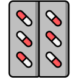

Save Health!
Лікуйтесь безпечно
Save Health!
Зменшіть контакт з людьми
Приймайте відповідні лікі
Пийте корисні чаї.
Як можна лікуватися?
- Багато пити. Важливо пити достатньо рідини, щоб запобігти зневодненню. Це може бути вода, трав'яні чаї або розчини для регідратації. Вода допомагає зняти інтоксикацію, знизити температуру і підтримує нормальне функціонування організму.
- Відпочинок. Потрібно дати організму відпочинок і достатньо часу на відновлення для швидкого одужання. Надмірне навантаження може погіршити симптоми.
- Лікування симптомів. Для полегшення симптомів, таких як кашель або біль у горлі, можна використовувати льодяники для горла, а також теплі соляні полоскання. Важливо не забувати про зволоження слизових оболонок.
- Зниження температури. Якщо температура піднялася вище 38°C, можна застосовувати жарознижувальні засоби (парацетамол або ібупрофен) після консультації з лікарем. Не рекомендується самостійно приймати антибіотики, оскільки вони не діють на віруси.
- Зволоження повітря. Сухе повітря може погіршити стан слизових оболонок носа та горла, тому корисно використовувати зволожувачі повітря або просто тримати поблизу посудину з водою.

Галерея

Wishes
Тут буде таємне побажання!